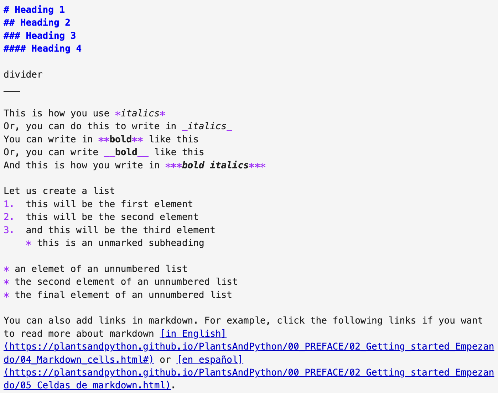
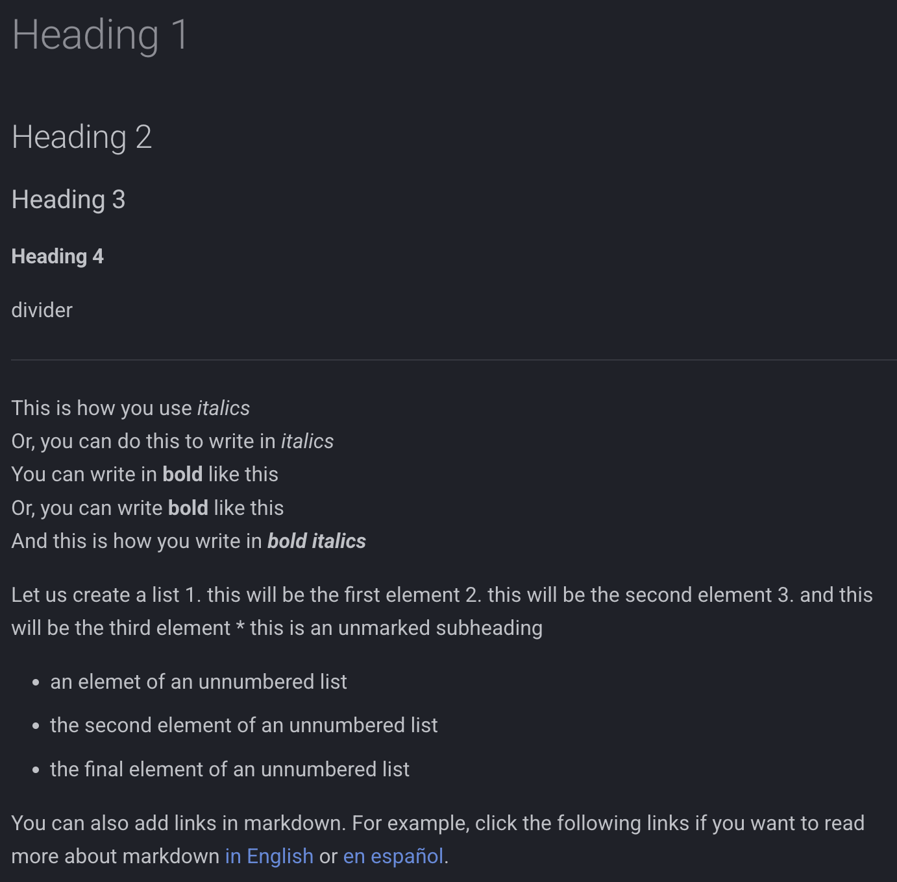
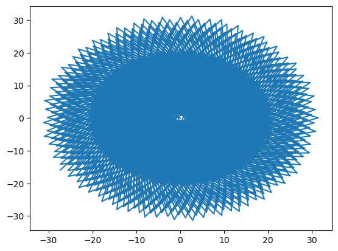
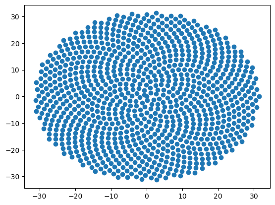
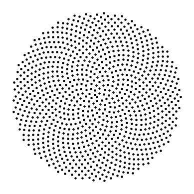
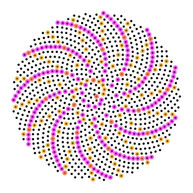
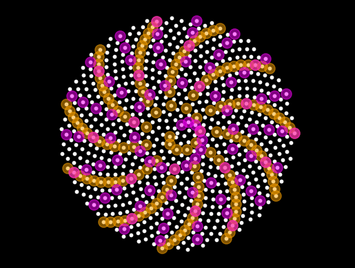

Welcome to / Bienvenid@ a Plants&Python 🪴🐍🪴
This Quick Start guide was originally developed for a workshop held during the XX Sociedad Mexicana de Bioquímica National Plant Biochemistry and Molecular Biology Congress in Oaxaca, México, 16-20 October 2023.
The workshop will be held before the meeting starts the first day.
When: Monday 16 October 2023, at 11am
Where: Centro Cultural San Pablo, Hidalgo 907 e Independencia 904, Centro, Oaxaca, C.P. 68000
Dr. Dan Chitwood (Michigan State University) and Dr. Alejandra Rougon (ENES-León, UNAM) will teach the workshop. We will use the Plants&Python learning materials.
Plants&Python is available in English and Spanish. It is designed to provide an introduction to coding principles in the Python coding language. If you have no coding experience, then Plants&Python is meant for you!
Please watch the welcome video, por favor mira el vídeo de bienvenida.
Preparation for the workshop
Before the workshop, try to download Anaconda, which includes Python, Jupyter notebooks, and Python modules we will use. Select your operating system from this link and follow the instructions. You can also watch a video to install Anaconda, in English y en español.
If you can not download Anaconda or don't have the time, no worries! You can attend the workshop and watch and use the Plants&Python materials on your own time.
Using Jupyter notebooks
The words you are reading and the code you see are all in a Jupyter notebook! Jupyter notebooks are a file that allow for coding together with text (called markdown) and embedded pictures and videos. They are great for teaching and education as well as reproducible research using Python.
If you have installed Anaconda, you can open this Jupyter notebook and code along during the workshop! Either type jupyter notebook in the terminal application on your computer, or select the Anaconda navigator and click launch Jupyter notebook. Jupyter will open in your internet browser, and you can navigate to the folder where you have stored this file, Oaxaca_workshop.ipynb, and open it. Follow the instructions here, in English or en español.
The types of cells are markdown and coding. The words you are reading are in markdown! If you have opened this Jupyter notebook file (Oaxaca_workshop.ipynb), you can double click on this cell and see the markdown code that generated this text. To return to the formatted text, press shift + enter.
Below, you can see some markdown formatting. Compare the original markdown code to the output formatted text.
 
Variables and your first Python code!
Let's write some code! Coding in Python is easy, and it all begins with variables. You can read more, in English or en español, about writing code in Jupyter notebooks.
# Let's write some code to calculate the area of a circle
# by using the #hashtag, Python will ignore the text after "#",
# allowing us to write comments to interpret our code
pi = 3.14159 # we use "=" to set a variable value. This is pi
r = 2 # our radius value
Area = pi*r**2 # we can use our variables for calculations, "**" is for exponents
Area # we can simply write the variable to see it's value
# Press shift + enter to execute the code
12.56636
12.56636
Lists and indexing
A list is a type of variable. Lists can hold any type of data, including integers (numbers like 1, 2, and 3), floats (decimals, like 3.14159), and strings (letters, which we indicate using quotes, like "Oaxaca" or 'Oaxaca'.
We create a list with square brackets and separating values with commas, like this:
# let's create our first list, with integers, floats, and a string
my_list = [1, 2, 3, 3.14159, "Oaxaca"]
print(my_list)
[1, 2, 3, 3.14159, 'Oaxaca']
Workshop activity:
Let's introduce ourselves! We will create four lists, with our names, apellidos, the country or state in México we are coming from, and our favorite plant. Notice that number of items in the lists and their order is the same.
Alejandra and I will go first!
# a list of workshop participant names!
nombre = ["Dan",
"Alejandra"
]
# a list of workshop participant last names!
apellido = ["Chitwood",
"Rougon"
]
# a list of the country or Mexican state participants are from!
estado_o_pais = ["Estados Unidos",
"Guanajuato"
]
# a list of the favorite plants of the participants
planta_favorita = ["jacaranda",
"helecho"
]
Indexing is a way to access items in a list. Indexing starts with 0. That is, the first element of the list is indexed by 0, the second element by 1, the third element by 2.
Let's assign a variable, i, an index value. We will use the index value to access information across the lists.
i = 0 # index position. Index values start on 0
print(nombre[i]) # print the index position i of list nombre
print(apellido[i]) # print the index position i of list apellido
print(estado_o_pais[i]) # print the index position i of estado_o_pais
print(planta_favorita[i]) # print the index position i of list planta_favorita
Dan
Chitwood
Estados Unidos
jacaranda
Let's use the print() function to create a sentence using indexing:
i = 1 # index position. Index values start on 0
# print the sentence "X es de X y su planta favorita es X"
print(nombre[i], apellido[i], "es de", estado_o_pais[i],
"y su planta favorita es", planta_favorita[i])
Alejandra Rougon es de Guanajuato y su planta favorita es helecho
Loops
Loops allow us to change the value of a variable, using a process called iteration. Each time we iterate over a value, we change the value of the variable, allowing us to index over many values, or to perform multiple calculations.
The most common loop is a for loop. We can directly iterate over the values in a list. Let's try to iterate over the values in our list planta_favorita:
jacaranda
helecho
We can also loop by using index. Using the range() function, we can iterate over integer values. Let's try it out!
0
1
2
3
4
We can conveniently use the len() function to determine how many elements are in a list. Then, using the list length with range(), we can iterate over each index position in a list.
2
0
1
for i in range(len(nombre)):
print(nombre[i], apellido[i], "es de", estado_o_pais[i],
"y su planta favorita es", planta_favorita[i])
Dan Chitwood es de Estados Unidos y su planta favorita es jacaranda
Alejandra Rougon es de Guanajuato y su planta favorita es helecho
We can create an empty list outside of a loop. The empty list can be used to store values that are generated by the loop. Using the .append() function, we can add a new element to the list as it is generated within the loop. The format of .append() is different from what we've seen before. It takes the form of my_list.append(item_to_append), where item_to_append will be added to my_list.
Let's see how it works! In this loop, we will create a new list called lista_nombre_completo that stores a new variable called nombre_completo. We use a for loop by index to find the correct nombre and apellido to use.
lista_nombre_completo = [] # create an empty list to store results
for i in range(len(nombre)):
nombre_completo = nombre[i] + "_" + apellido[i] # create the variable nombre completo
lista_nombre_completo.append(nombre_completo) # add or append the variable to the end of the list
['Dan_Chitwood', 'Alejandra_Rougon']
How to build a sunflower, Part 1:
Calculating the golden angle using loops
The Fibonacci sequence adds the previous two terms to create the next term. It starts with 1, 1, followed by:
1 + 1 = 2,
1 + 2 = 3,
2 + 3 = 5,
3 + 5 = 8,
5 + 8 = 13,
8 + 13 = 21,
and so on.
The Fibonacci sequence can be used to calcualte the golden ratio and the golden angle. Let's try to calculate it using loops!
fibonacci_seq = [1,1] # a list to store the Fibonacci series, with the first 2 elements
for n in range(2,11,1): # starting on 2, up to not including 11, increments of 1
n_minus_2 = fibonacci_seq[n-2] # find the n-2 element of the series
n_minus_1 = fibonacci_seq[n-1] # find the n-1 elemet of the series
n_value = n_minus_2 + n_minus_1 # add the n-2 and n-1 elements for the new element
print("the", n, "value is", n_value) # print out the new element
fibonacci_seq.append(n_value) # add the new element to the list
the 2 value is 2
the 3 value is 3
the 4 value is 5
the 5 value is 8
the 6 value is 13
the 7 value is 21
the 8 value is 34
the 9 value is 55
the 10 value is 89
We can simplify our code
fibonacci_seq = [1,1] # a list to store the Fibonacci series, with the first 2 elements
for n in range(2,30,1): # starting on 2, up to not including 30, increments of 1
fibonacci_seq.append(fibonacci_seq[n-2] + fibonacci_seq[n-1]) # calculate the next element of the series
[1,
1,
2,
3,
5,
8,
13,
21,
34,
55,
89,
144,
233,
377,
610,
987,
1597,
2584,
4181,
6765,
10946,
17711,
28657,
46368,
75025,
121393,
196418,
317811,
514229,
832040]
With a loop, you can calculate multiple things using the same indices. For example, the golden ratio is the ratio of the n divided by the n-1 value of the Fibonacci series. Let's calculate the Fibonacci series and golden ratio at the same time.
fibonacci_seq = [1,1] # a list to store the Fibonacci series, with the first 2 elements
golden_ratio_list = [] # a list to store the golden ratio
for n in range(2,30,1): # starting on 2, up to not including 30, increments of 1
fibonacci_seq.append(fibonacci_seq[n-2] + fibonacci_seq[n-1]) # calculate the next element of the series
golden_ratio_list.append(fibonacci_seq[n] / fibonacci_seq[n-1]) # calculate the golden ratio
[2.0,
1.5,
1.6666666666666667,
1.6,
1.625,
1.6153846153846154,
1.619047619047619,
1.6176470588235294,
1.6181818181818182,
1.6179775280898876,
1.6180555555555556,
1.6180257510729614,
1.6180371352785146,
1.618032786885246,
1.618034447821682,
1.6180338134001253,
1.618034055727554,
1.6180339631667064,
1.6180339985218033,
1.618033985017358,
1.6180339901755971,
1.618033988205325,
1.618033988957902,
1.6180339886704431,
1.6180339887802426,
1.618033988738303,
1.6180339887543225,
1.6180339887482036]
The golden angle (in degrees) is $360\times{1\over\phi^2}$, where $\phi$ is the golden ratio.
So, our estimate of the golden angle in degrees is:
golden_ratio = golden_ratio_list[-1] # get the last element of the golden ratio list
golden_angle = 360*(1/golden_ratio**2) # approximate the golden angle
print(golden_angle) # print the golden angle in degrees
137.5077640503253
The real value of the golden angle is $180\times(3-\sqrt5)$
137.50776405003785
We were close to the real value!
How to build a sunflower, Part 2:
Building and plotting our sunflower
We have the golden angle! Now we can build our sunflower!
Every successive floret of a sunflower is separated by the golden angle. The distance of each floret to the center is the square root of the order it was initiated. For every floret n, the angle (theta, in radians) and distance (radius, r) is therefore:
Once we have calcualted theta and r, we can calcualte x and y coordinates for our sunflower using the following equations:
Before we construct our sunflower, we need to import modules. In Python, modules are sets of useful functions. Two important modules that we will be using today are math for mathematical functions, and matplotlib.pyplot, which allows us to plot. We need to reference the module a function comes from before using it, and we can abbreviate it. We will leave math as math, but we will shorten matplotlib.pyplot to plt.
In the cell below, we import the math and matplotlib.pyplot modules to use their functions:
Below, let's convert the golden angle to radians. Note the use of math.pi to get the value of $\pi$.
real_golden_angle = 180*(3-5**(1/2)) # the golden angle in degrees
gold_ang_rad = real_golden_angle * ( math.pi / 180.0 ) # the golden angle in radians
We are ready to calculate the coordinates of our sunflower! Study the code below, which calculates the x and y coordinates for 1000 florets.
xlist = [] # a list to store x coordinate values
ylist = [] # a list to store y coordinate values
for n in range (0, 1000, 1): # starting on 0, iterate 1000x, increments of 1
# First, calculate theta and radius for n
theta = n * gold_ang_rad
r = math.sqrt(n)
# Second, calculate x and y coordinate values for n
x = r * math.cos(theta)
y = r * math.sin(theta)
# Finally, store and append x and y values to a list
xlist.append(x)
ylist.append(y)
We can check our xlist and ylist values using indexing, and their length using the len() function.
print("The first five xlist values are", xlist[0:5]) # print the first 5 xlist values
print("The first five ylist values are", ylist[0:5]) # print the first 5 ylist values
print("The length of xlist is", len(xlist)) # print the length of xlist
print("The length of ylist is", len(ylist)) # print the length of ylist
The first five xlist values are [0.0, -0.7373688780783197, 0.12363864559502138, 1.053847020514727, -1.9694269706308574]
The first five ylist values are [0.0, 0.6754902942615238, -1.4087985964343621, 1.3745568221620497, -0.3483639007586233]
The length of xlist is 1000
The length of ylist is 1000
But we want to see the xlist and ylist values, they are our sunflower!!!
Let's try the most famous matplotlib function, plt.plot(). plt.plot() takes a list of x values and a list of y values, which we have!
Let's try it!
[<matplotlib.lines.Line2D at 0x7fce76a63d60>]

Interesting. But maybe we want points, not lines. Let's try plt.scatter() instead.
<matplotlib.collections.PathCollection at 0x7fce76e8c520>

That is looking better!
There are may functions in matplotlib. Let's try some out and make a better looking sunflower!
size = 5 # set point size
color = "black" # set point color
transparent = 1 # set alpha, or transparency
# for colors, see https://matplotlib.org/stable/gallery/color/named_colors.html
plt.scatter(xlist, ylist, s=size, c=color, alpha=transparent) # plot out points
plt.gca().set_aspect("equal") # set aspect ratio to equal
plt.axis("off") # remove plot axes
(-34.240980675327435, 34.54297213836181, -34.449612822885, 34.40183494344153)

Do you see patterns in the sunflower? The spiral arms you see in the phyllotaxy of plants are called parastichies. The parastichies are defined by taking every nth element of the phyllotaxy series, where n is a member of the Fibonacci series.
For indexing, remember there are three elements, separated by colon: the start, up to but not including the end, and a step. The step takes every nth element in a list. Full indexing looks like this:
my_list[start:end:step]
````
Let's try to find our parastichies in the code below!
```python
size = 5 # set point size
color = "black" # set point color
transparent = 1 # set alpha, or transparency
# for colors, see https://matplotlib.org/stable/gallery/color/named_colors.html
plt.scatter(xlist, ylist, s=size, c=color, alpha=transparent) # plot out points
plt.scatter(xlist[::5], ylist[::5], c="magenta", alpha=0.5) # parastichy 5
plt.scatter(xlist[::8], ylist[::8], c="orange", alpha=0.5) # parastichy 8
plt.gca().set_aspect("equal") # set aspect ratio to equal
plt.axis("off") # remove plot axes
(-34.240980675327435, 34.54297213836181, -34.449612822885, 34.40183494344153)

How to build a sunflower, Part 3:
Complex code and going forward in your coding journey!
That is an introduction to Python! It is impossible to teach you everything in an hour! Coding is a lifelong journey, and we hope the Plants&Python resources can help you get started! Ask questions, google, and research, and you will find the answers to allow you to code whatever your intended goals are!
Below, is some fun code to try and make a model of a growing sunflower. Let's take the concepts we have learned and apply them to something more complex.
Let's introduce one more concept: the double loop. A double loop has a loop inside a loop. In the example below, for each value of i that is iterated, the inner loop iterates over each value of j. Once all j values have been iterated, the inner loop exits and go back to the outer loop and the next values of i.
Try to understand how the two loops below work:
for i in range(5): # the outer loop
for j in range(5): # the inner loop
print("i is", i, "and j is", j)
i is 0 and j is 0
i is 0 and j is 1
i is 0 and j is 2
i is 0 and j is 3
i is 0 and j is 4
i is 1 and j is 0
i is 1 and j is 1
i is 1 and j is 2
i is 1 and j is 3
i is 1 and j is 4
i is 2 and j is 0
i is 2 and j is 1
i is 2 and j is 2
i is 2 and j is 3
i is 2 and j is 4
i is 3 and j is 0
i is 3 and j is 1
i is 3 and j is 2
i is 3 and j is 3
i is 3 and j is 4
i is 4 and j is 0
i is 4 and j is 1
i is 4 and j is 2
i is 4 and j is 3
i is 4 and j is 4
The double loop is important if we want to make a growing model of a sunflower. The way we currently calculate the x and y coordinate values is a problem. Let's say our strategy is to take 1 floret, then 2 florets, then 3 florets, and so on, just like a sunflower grows. The way we currently have the code, the first floret will always have the shortest radius! In order to make sure the first floret continues to grow in its radius length, we need to reverse the order of the radius list each time we add a floret.
This is some psuedo-code to help understand this problem:
# we start with the first floret
thetas = [1*gold_ang_rad]
radius = [sqrt(1)]
reverse_radius = [sqrt(1)]
# we add the second floret
thetas = [1*gold_ang_rad , 2*gold_ang_rad] # the angles of each floret
radius = [sqrt(1), sqrt(2)] # but the first floret should have the longest radius, not shortest!
reverse_radius = [sqrt(2), sqrt(1)] # reverse the radius list order. Now first floret has longest radius
# we add the third floret
thetas = [1*gold_ang_rad , 2*gold_ang_rad, 3*gold_ang_rad] # the angles of each floret
radius = [sqrt(1), sqrt(2), sqrt(3)] # but the first floret should have the longest radius, not shortest!
reverse_radius = [sqrt(3), sqrt(2), sqrt(1)] # reverse the radius list order. Now first floret has longest radius
````
When making long, complex code, it's important to have a plan and to sketch out your thoughts with pseudo-code. Here is some more pseudo-code for our growing sunflower!
```python
# First, pre-calculate thetas and radii
theta_list # store thetas
radii_list # store radii
for n in range(): # for the number of florets
theta # calculate theta for each n
r # calculate r for each n
# Next, plot our our animation frame-by-frame
# The outer loop will select current florets
# adding one floret for each frame of the animation
# and reverse the radius list
for f in florets: # for each floret
current_thetas # get the current angles, growing +1 each iteration
current_radii # get the current radii, growing +1 each interation
reverse_radii # reverse the current radii list
# now that we have the current thetas and reversed radii
# we use the inner loop to calculate x and y coordinates
xlist # store x values
ylist # store y values
for n in current florets: # for the currently selected florets
x # calculate x for each currently selected floret
y # calculate y for each currently selected floret
# Once all x and y vals calculated for currently selected florets
# then plot our sunflower!
# this is one frame of the animation
plt.scatter()
Check out the code below! Try to understand how the code is working!
# Imports to get the animation to work
from IPython.display import display, clear_output
import time
# First, pre-calculate thetas and radii
thetas = [] # store thetas
radii = [] # store radii
for n in range(750): # for the number of florets
theta = n * gold_ang_rad # calculate theta for each n
r = math.sqrt(n) # calculate r for each n
thetas.append(theta)
radii.append(r)
# For animation, you need to call a figure
fig = plt.figure()
fig = plt.figure(facecolor='black') # For a dark background
for f in range(len(radii)): # for each floret
current_thetas = thetas[0:(f+1)] # get the current angles, growing +1 each iteration
current_radii = radii[0:(f+1)] # get the current radii, growing +1 each interation
current_radii.reverse() # reverse the current radii list
# now that we have the current thetas and reversed radii
# we use the inner loop to calculate x and y coordinates
xlist = [] # store x values
ylist = [] # store y values
for n in range (f+1): # for the currently selected florets
r = current_radii[n] # select the current radius
theta = current_thetas[n] # select the current theta
x = r * math.cos(theta) # calculate x for each currently selected floret
y = r * math.sin(theta) # calculate y for each currently selected floret
xlist.append(x) # store x values
ylist.append(y)# store y values
# Once all x and y vals calculated for currently selected florets
# then plot our sunflower!
# this is one frame of the animation
plt.scatter(xlist, ylist, alpha=1, c="white", s=10)
plt.scatter(xlist[::5], ylist[::5], c="orange", s=120, alpha=0.5)
plt.scatter(xlist[::8], ylist[::8], c="magenta", s=120, alpha=0.5)
plt.xlim(-30, 30) # Put maximum xlim values here
plt.ylim(-30, 30) # Put maximum ylim values here
plt.axis('off') # no axis
plt.axis('equal') # equal aspect ratio
# If you want to save files to create a GIF
# filename = "temp" + str(n) + ".jpg"
# plt.savefig("./temp/" + filename)
# This is the code that creates the animation
time.sleep(0.001)
clear_output(wait=True)
display(fig)
fig.clear()
# Closes the figure animation once complete
# plt.close()
